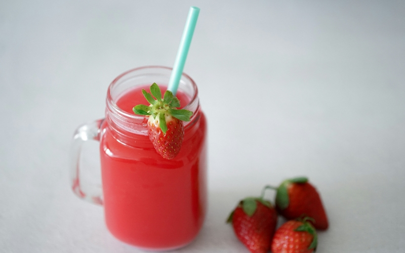

Industry Information
Home > News > Industry Information > Sodium Benzoate vs Potassium Sorbate in Soft Drinks: Which Preservative Works Better?
Mar. 18, 2026
When evaluating sodium benzoate vs potassium sorbate as a preservative for soft drinks, the better choice depends primarily on pH, formulation design, and regulatory requirements. Sodium benzoate generally performs more effectively in highly acidic carbonated beverages, while potassium sorbate may offer broader yeast and mold inhibition in slightly higher pH systems. A proper beverage preservatives comparison should consider antimicrobial spectrum, solubility, sensory impact, and compliance limits in the target market. Both preservatives are widely approved, but their performance differs depending on drink composition and storage conditions.

Selecting the right preservative for soft drinks is a critical formulation decision for beverage manufacturers. Carbonated drinks, flavored waters, energy drinks, and fruit-based soft beverages are all vulnerable to microbial contamination during production, filling, and distribution. A structured sodium benzoate vs potassium sorbate evaluation helps determine which preservative system best supports product stability and regulatory compliance.
Manufacturers exploring beverage additive systems often compare these two widely used options. While both are approved food-grade preservatives, their effectiveness varies based on acidity, microbial risk, and labeling considerations.
Sodium benzoate is the sodium salt of benzoic acid and is particularly effective in acidic environments. In most carbonated soft drinks with pH below 4.0, sodium benzoate provides strong inhibition against yeast and certain bacteria. Because of this, it is frequently selected as a preservative for soft drinks with high acidity.
A detailed explanation of dosage and regulatory aspects can be found in our technical overview of sodium benzoate in beverages. In many beverage preservatives comparison analyses, sodium benzoate is recognized for cost efficiency and stable performance in cola-type and citrus-flavored drinks.
However, sodium benzoate vs potassium sorbate comparisons often highlight that benzoate performance decreases as pH rises above 4.5.
Potassium sorbate is the potassium salt of sorbic acid and is effective against molds and yeasts across a broader pH range than benzoate. In a sodium benzoate vs potassium sorbate evaluation, sorbate may demonstrate stronger antifungal performance in certain beverage systems.
Although commonly associated with bakery applications, such as those discussed in bread shelf life control, potassium sorbate is also used as a preservative for soft drinks, especially in fruit-based or non-carbonated beverages where pH conditions vary.
When conducting a beverage preservatives comparison, formulators typically evaluate microbial challenge results under real storage conditions.
| Factor | Sodium Benzoate | Potassium Sorbate |
|---|---|---|
| Best pH range | Below 4.5 | Up to ~6.5 |
| Primary activity | Yeast, some bacteria | Mold and yeast |
| Typical use in soft drinks | Carbonated beverages | Fruit-based drinks |
| Sensory impact | Low at approved levels | Low at approved levels |
| Cost considerations | Generally economical | Slightly higher in some markets |
This sodium benzoate vs potassium sorbate table provides a simplified beverage preservatives comparison, but real-world performance depends on formulation specifics.
Both preservatives are widely approved under FDA, EU, and Codex standards. However, maximum allowable concentrations differ by product category. In a sodium benzoate vs potassium sorbate assessment, compliance with regional regulations must be verified before commercialization.
For exporters, conducting a beverage preservatives comparison that includes regulatory review reduces the risk of reformulation or labeling adjustments.
The answer depends on application conditions. In highly acidic carbonated beverages, sodium benzoate vs potassium sorbate comparisons often favor sodium benzoate due to optimized activity at low pH. In fruit beverages or drinks with moderate acidity, potassium sorbate may provide broader mold inhibition.
In some cases, manufacturers use a combined system to balance antimicrobial spectrum and stability. The final choice of preservative for soft drinks should consider:
pH and acidity level
Microbial risk profile
Target shelf life
Regulatory limits
Cost and supply stability
A structured beverage preservatives comparison supported by laboratory testing remains the most reliable method.
From a sourcing perspective, stability of specification and documentation is essential. When evaluating sodium benzoate vs potassium sorbate suppliers, procurement teams typically assess purity, certification, packaging options, and global logistics capability.
With experience in food and industrial additives, GOLIATH supports beverage manufacturers through standardized quality control, bulk packaging flexibility, and consistent supply performance. Our portfolio covers preservatives, sweeteners, and related ingredients for beverage systems. For technical documentation or quotation requests, you may contact our team.
Beyond food applications, GOLIATH also supplies materials for industrial sectors, including coating additives, demonstrating broader manufacturing and logistics capability.
In a sodium benzoate vs potassium sorbate comparison, sodium benzoate typically performs better in highly acidic carbonated drinks, while potassium sorbate may be suitable for fruit-based beverages.
Yes. Some manufacturers combine them to broaden antimicrobial coverage, provided regulatory limits are respected.
Yes. pH is one of the most important variables when comparing sodium benzoate vs potassium sorbate.
Both are approved globally, but allowable concentrations differ by country and beverage category.
Consistency, certification, traceability, and reliable logistics are key factors.

Goliath Ingredients Holding Limited
1st Floor, Ellen Skelton Building, 3076 Sir Francis Drake’s Highway, Road Town, Tortola, VG1110, British Virgin Islands.
henry@goliathholding.com
Navigation
Email: henry@goliathholding.com